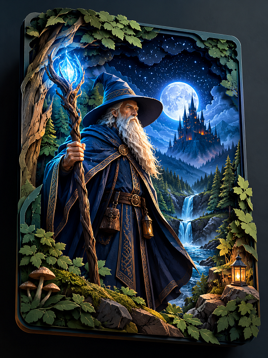

Coloque o arquivo
mago3d.png
na mesma pasta deste index.html
GIROSCÓPIO OFF
RECENTRALIZAR
CALIBRAR
NÍVEL 1
NÍVEL 2
Arraste com o dedo para girar. Ative o giroscópio para controlar com o movimento do celular.